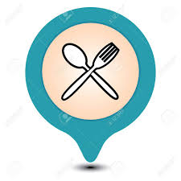

<%@ page session="false" contentType="text/html; charset=utf-8"
pageEncoding="utf-8"%>
<%@ taglib uri="http://java.sun.com/jsp/jstl/core" prefix="c" %>
information
- 
삼원정 중문본점
제주 서귀포시 색달동 2285-7
전화번호 : 064-738-1077
-
해녀와 바다
제주 제주시 도두1동 2635-1 해녀와바다 2층
전화번호 : 064-713-0040
-
기원 뚝배기
제주 서귀포시 색달중앙로 22
전화번호 : 064-738-7722
-
동도원
제주 제주시 삼무로1길 5
전화번호 : 064-747-9996
-
제주곰집
제주 서귀포시 이어도로 703-4
전화번호 : 064-739-6002
-
올래국수
제주 제주시 귀아랑길 24
전화번호 : 064-742-7355
-
우진해장국
제주 제주시 서사로 11
전화번호 : 064-757-3393